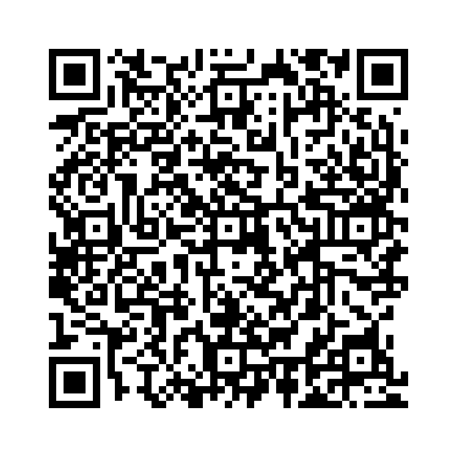

名詞節 は、文の中で名詞の役割を果たす節を指します。以下は主な名詞節の種類です：
名詞節は主語、補語、目的語として使われることがあります。
以下の単語を並び替えて正しい文を作成しましょう。（和訳を参考にしてください）

問題1: (believes / he / she / that / is / right) - 彼女は彼が正しいと信じています。
解答: She believes that he is right.
解説: that節 を目的語として使用しています。
問題2: (what / know / you / do / want / I / to) - 私はあなたが何をしたいのかを知りたい。
解答: I want to know what you do.
解説: what節 を目的語として使用しています。
問題3: (whether / not / does / is / true / not / it / or / matter) - それが真実かどうかは重要ではない。
解答: Whether it is true or not does not matter.
解説: whether節 を主語として使用しています。
問題4: (if / he / late / wonder / I / is) - 私は彼が遅れているのかどうかと思う。
解答: I wonder if he is late.
解説: if節 を目的語として使用しています。
問題5: (tell / me / know / when / you) - あなたがいつ知ったのか教えてください。
解答: Tell me when you know.
解説: when節 を目的語として使用しています。